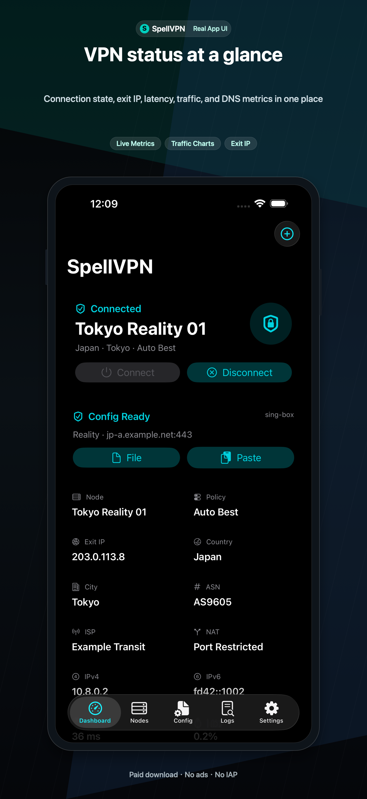
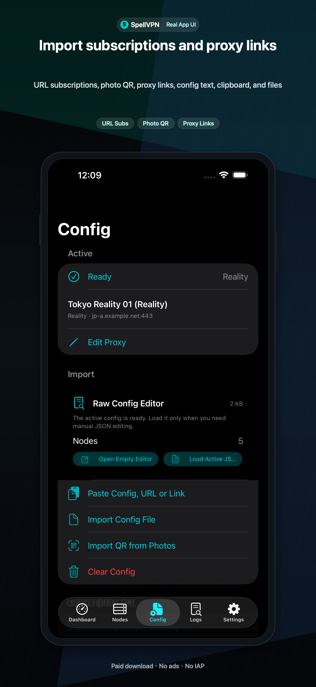
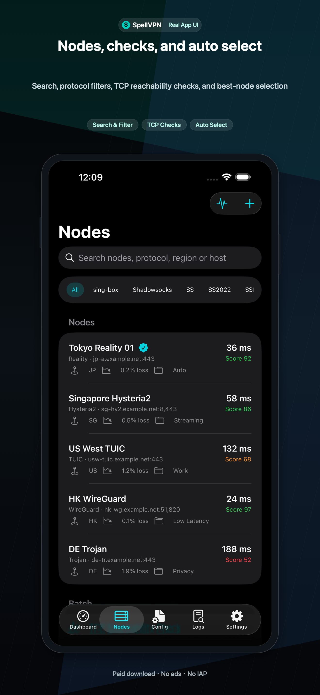
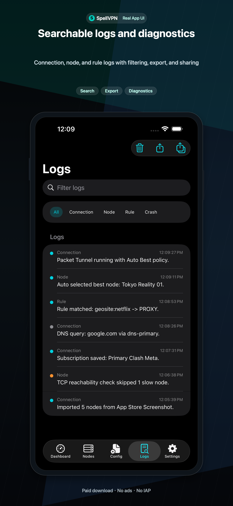
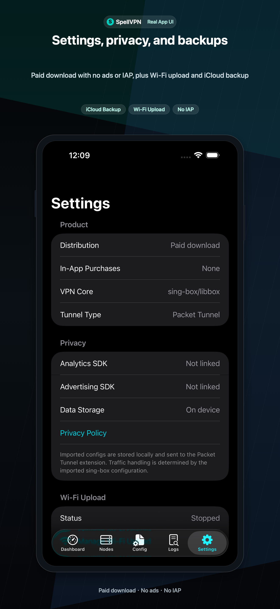

1
Before You Start
- Prepare a compatible sing-box JSON file, Clash/Mihomo YAML, subscription URL, proxy URI, QR code, clipboard text, local file, or Wi-Fi upload file from your own provider.
- For a complete VPN configuration, make sure the imported sing-box profile contains a
tuninbound and at least one usable proxy outbound. A node link can be imported first, then converted into the active runtime configuration. - Confirm that the server or subscription endpoint is reachable from your network before importing it. SpellVPN does not create accounts, servers, credentials, or working traffic for an invalid provider.
- SpellVPN is a client. It does not sell proxy nodes or operate a developer-hosted VPN traffic network. Use only configurations you are allowed to use.

2
Import a Configuration
- Open SpellVPN, stay on Dashboard, and tap the + button in the top-right corner. Choose QR scan, photo QR, clipboard, Files, Wi-Fi Upload, subscription URL, proxy link, system share, or URL scheme.
- For a subscription, paste the complete URL and wait for the download and parser result. For a single node, paste a proxy URI supported by the submitted build, such as
ss://,vmess://,vless://,trojan://,hysteria2://,hy2://,tuic://,socks://,socks5://,http://, orhttps://proxy links. - Review the detected configuration name, protocol, server, port, transport, TLS, and rule details before saving. Do not treat a displayed node name as proof that the remote server works.
- If the import fails, check for an expired or blocked subscription URL, malformed JSON/YAML, Base64 text with extra characters, unsupported fields, or missing server and port. Open Logs for the exact parser message.
- OpenVPN
.ovpnand IKEv2.mobileconfigare detected with a clear limitation because this build does not include those separate native profile cores.

3
Manage Subscriptions and Nodes
- After a successful subscription import, open Settings → Network & Configuration → Manage Subscriptions. Each saved URL has its own group, so importing or updating one group does not replace unrelated groups.
- Open a group to update its URL, copy the URL, rename the group, or delete it. Wait for the result message and check how many nodes were imported or skipped.
- Open Nodes to search by name, filter by protocol, expand a group, select the active node, edit supported outbound fields, mark favorites, export a node as JSON, or show a node QR code.
- Use Config to review the active JSON and supported route, DNS, TUN, IPv6, MTU, include-route, and exclude-route settings before connecting.
- Exported node links can contain server addresses, ports, and credentials. Share them only with people or apps you trust, and do not publicly distribute configs, subscriptions, or credentials that are not yours.

4
Connect and Disconnect
- Select a valid saved configuration and node, return to Dashboard, and tap Connect.
- Approve the iOS VPN permission prompt the first time a Packet Tunnel profile is installed. The iOS status bar VPN indicator is controlled by iOS.
- When the app and iOS both show Connected, open a real website test or use HTTP, TCP, DNS, and IP checks in Network Tools. A system Connected status only confirms that the tunnel profile started; it does not prove that the selected remote node is usable.
- Use Settings → Network & Configuration → Manage DNS to review DNS mode, bootstrap resolvers, hosts, Fake-IP, and IPv6 choices. Check the active routing mode before changing the node.
- Use the same control to disconnect. Do not repeatedly tap Connect while the app is still in Connecting; wait for the result or open Logs.
5
Diagnostics and Network Tools
- If the VPN is connected but Google, YouTube, or other websites do not load, first check the active node, route mode, DNS settings, TLS/transport fields, server port, and the node protocol test. Switch to another node before changing several settings at once.
- Use the Network Tools available in the submitted build, including TCP Ping, DNS lookup, IP lookup, Whois, GeoIP, TLS test, HTTP test, TCP port check, UDP send, IPv6 visibility check, and speed test.
- Use Logs after an import, Ping, or connection attempt. Filter by category and time, then use Export Diagnostics Report to share a text report with support.
- In node lists, a blank or
0 msresult means the endpoint was not measured, failed, or requires an active UDP/QUIC protocol test. It is not proof of a zero-latency connection. App Store builds use TCP reachability instead of raw ICMP sockets. - The current App Store build does not expose traceroute, WebRTC leak testing, MITM, rewrite scripts, native OpenVPN, or native WireGuardKit.

6
Backups, Data, and Editions
- Use Settings → Data & Sync → Export App Data File to create a JSON backup, or use iCloud Drive backup when the signed App ID has the required iCloud Documents capability. The backup can include configs, nodes, subscriptions, rules, DNS, route mode, adapter settings, and statistics.
- Logs stay on device unless you export or share them. Clearing local data does not delete iCloud Drive backup files. The iOS VPN permission and active system tunnel are not portable backup data.
- On Ultra, open Settings → Subscription → Ultra Subscription to view StoreKit prices, purchase, restore, or manage the subscription. The four plan IDs are weekly, monthly, quarterly, and yearly products managed by Apple.
- SpellVPN Pro is paid, ad-free, and has no in-app purchases. SpellVPN Ultra is free with ads; optional App Store subscriptions remove ads and keep Ultra benefits active.

For help, contact balamanigill@gmail.com.
Pro is a paid download with no ads or in-app purchases. Ultra is free with Yandex/AdMob ads and optional auto-renewing subscriptions.